Si por algún motivo te ves en la situación de tener que retirarte del ciclo y sabes que aún estás a tiempo, estos son los pasos que debes seguir.
requisitos
Durante el proceso ten en cuenta lo siguiente
Estar al día en tus compromisos de pago
No haberte retirado de ciclo más de 2 veces consecutivas ni 3 veces alternas. No procede el retiro de ciclo del alumno con carta de permanencia aprobada.
Solo pagarán hasta la última boleta vencida los alumnos que:
PREGRADO: Se retiren hasta el día previo de los exámenes parciales. De lo contrario, deberán cancelar todas las boletas del semestre académico.
EPE: Se retiren hasta el día previo de iniciado los exámenes finales del primer módulo del semestre académico. De los contrario, deben cancelar todas las boletas del semestre académico.
Indicaciones
Para revisar si te encuentras dentro del rango de fechas hábiles para realizar el trámite, debes revisar el calendario académico vigente. Ingresa a la página web http://www.upc.edu.pe y sigue la siguiente ruta:
Servicios >> Contacto UPC >> Calendario
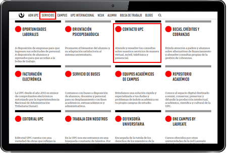
Selecciona el calendario que corresponde según modalidad y ciclo actual. Ubica el trámite de retiro de ciclo para validar que te encuentras dentro del rango de fechas establecido.
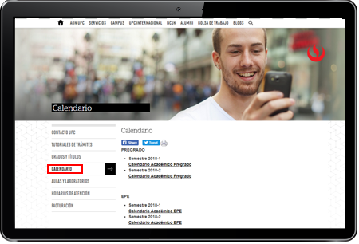
Registro del trámite
Ingresa a Mi UPC con tu usuario y contraseña.
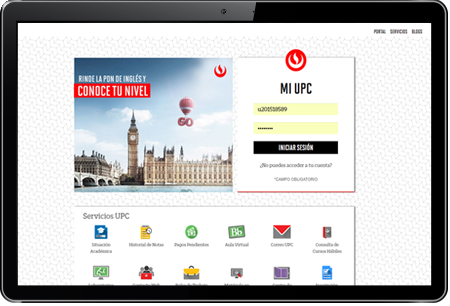
Luego selecciona la opción “Mis trámites” y haz clic en “Trámites de la carrera”. Luego, realiza tu solicitud haciendo clic en “Ir a Retiro del Ciclo”.
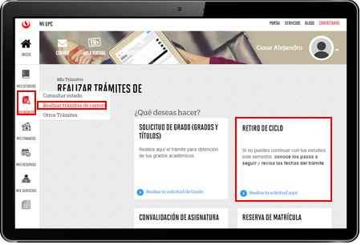
Ingresa al trámite y selecciona el motivo principal por el cual deseas retirarte.
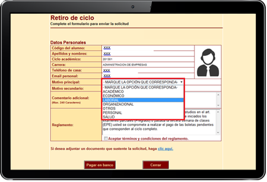
Selecciona el “Motivo secundario” por el cual deseas retirarte (las opciones varían según lo seleccionado en el “Motivo Principal” ).
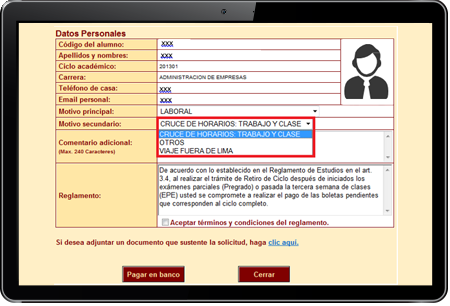
Ingresa un comentario adicional, debes “Aceptar términos y condiciones del reglamento”, luego haz clic en “Pagar en banco”.
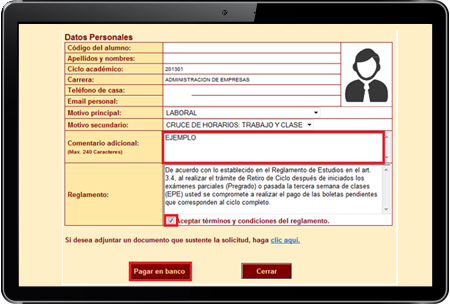
Al hacer clic en “Pagar en banco” aparecerá un mensaje: “¿Estás seguro de procesar para pagar en banco?” y deberás colocar “OK” .
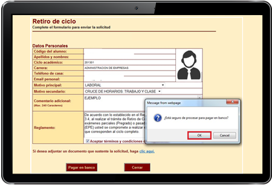
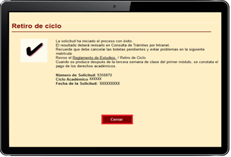
NOTA:Para que el trámite pueda ser evaluado por el director, deberás realizar el pago correspondiente dentro del plazo de 1 día útil, de lo contrario el trámite pasará a estado “Incompleto” y será como si no se hubiese ingresado el retiro de ciclo.
Si deseas conocer la lista de los precios de tus trámites, por favor ingresa aquí .
Validación
 Una vez realizado el trámite y luego de haber realizado el pago, debes validar que este se encuentre correctamente ingresado. Para ello, debes seguir los siguientes pasos:
Una vez realizado el trámite y luego de haber realizado el pago, debes validar que este se encuentre correctamente ingresado. Para ello, debes seguir los siguientes pasos:
Ingresa a Mi UPC, selecciona la opción “Mis trámites” y haz clic en “Trámites en curso”. A continuación, podrás visualizar tus trámites en curso y si deseas ver el detalle completo de tus trámites, deberás hacer clic en la opción “Consulta de trámites Alumno” .
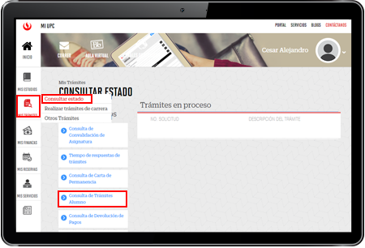
Selecciona el ciclo actual y haz clic en “Buscar”.

En la lista que aparecerá, deberá figurar el trámite de retiro de ciclo con estado “Pendiente”.
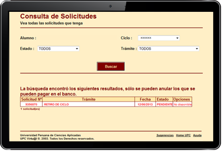
NOTA: Por esta misma vía se debe realizar el seguimiento respectivo del trámite hasta que este sea evaluado por el Director de tu carrera (Procede o No Procede).
¡No olvides validar tu solicitud!